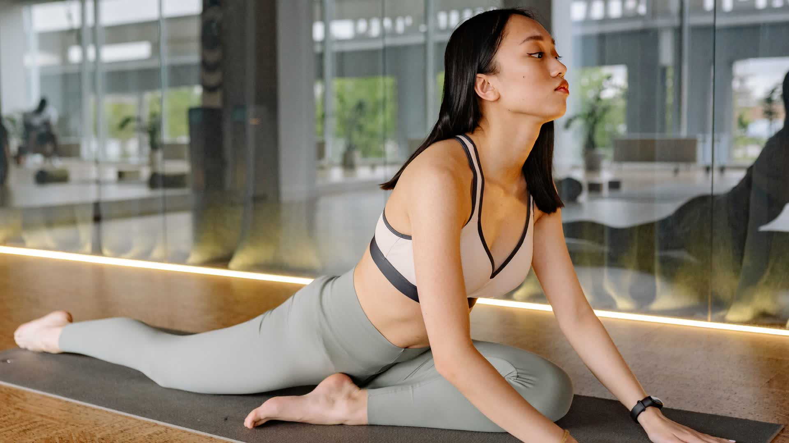
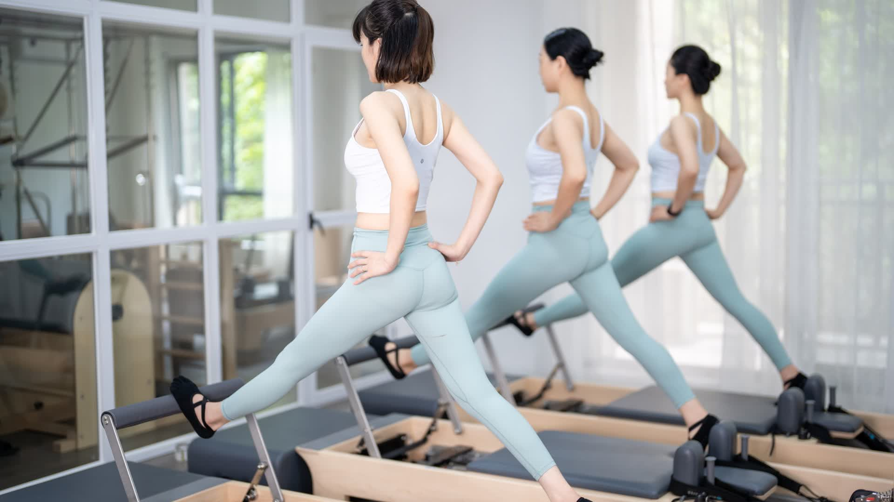

~/.agents/skills/premium-branding-onepage
아래 값은 열릴 때마다 data.js 에서 읽어옵니다.
—
※ data.js 를 읽지 못했습니다 — http(s) 환경에서 열어주세요.
| 섹션 | ID / 데이터 | 렌더러 | 상태 |
|---|---|---|---|
| 히어로 (영상 + 카피 + CTA) | #hero · profile | renderProfile | 완료 |
| 핵심 지표 (카운트업) | #stats-grid · stats[] | renderStats | 완료 |
| 강사 소개 (사진·경력·자격증) | #about · profile | renderAbout | 완료 |
| 움직임 철학 (벤토 그리드) | #movement-grid · philosophy[] | renderPhilosophy | 완료 |
| 프로그램 카드 | #programs-grid · programs[] | renderPrograms | 완료 |
| 수강생 후기 (평점 요약) | #reviews-grid · reviews | renderReviews | 완료 |
| 진행 과정 아코디언 | #curriculum-accordion | renderCurriculum | 완료 |
| FAQ 아코디언 | #faq-list · faq[] | renderFaq | 완료 |
| 문의 폼 + 스튜디오 인포 | #contact-form · profile.links | initContactForm | 완료 |
| 모바일 플로팅 상담 CTA | #mobile-cta | initFloatingCta | 완료 |
| 파일 | 역할 | 라인 | 크기 |
|---|---|---|---|
index.html | 시맨틱 마크업 + SEO/OG + 섹션 골격 | 464 | 31 KB |
styles.css | 웰니스 라이트 테마 (Mobile-First, 토큰) | 894 | 50 KB |
app.js | 렌더링 + 인터랙션 + 예외 처리 (ES Module) | 701 | 34 KB |
data.js | 콘텐츠 단일 출처 (비전공자 수정 대상) | 313 | 21 KB |
backup-01-personal-branding.html | 초기(김도윤) 라이트 템플릿 보존본 | — | 91 KB |
assets/media/hero.mp4 | 후킹 히어로 영상 (12s · 1080p · 무음 루프) | — | 2.4 MB |
assets/media/hero-poster.jpg | 영상 대표 썸네일 (저전력 폴백) | — | 117 KB |
assets/img/profile.jpg | 강사 프로필 사진 (4:5, 아시안 여성) | — | 38 KB |
assets/img/activity-*.jpg | 활동 사진 2종 (매트 재활 · 리포머 수업) | — | 180 KB |
assets/img/studio-*.jpg | 스튜디오 인테리어 예비 사진 3종 (미사용) | — | 1.2 MB |
assets/img/og-image.jpg | SNS 공유 카드 (1200×630) | — | 37 KB |


영상: assets/media/hero.mp4 — 사진 3장 Ken Burns + 크로스페이드 · 12초 · 1920×1080 · 30fps · 무음 (ffmpeg 제작). 세부 제작 레시피는 스킬 references/assets-pipeline.md 참고.
premium-branding-onepage 설치됨
사용자 수준 스킬 — 어느 워크스페이스에서나 "프리미엄 퍼스널 브랜딩 원페이지 / 강사 프로필 사이트 / data.js 사이트 수정" 요청으로 트리거됩니다.
~/.agents/skills/premium-branding-onepage/
운영 전 체크리스트 대기
템플릿 완성도 100% · 운영 입력 진행률 약 62% (사진/영상/후기 완료)